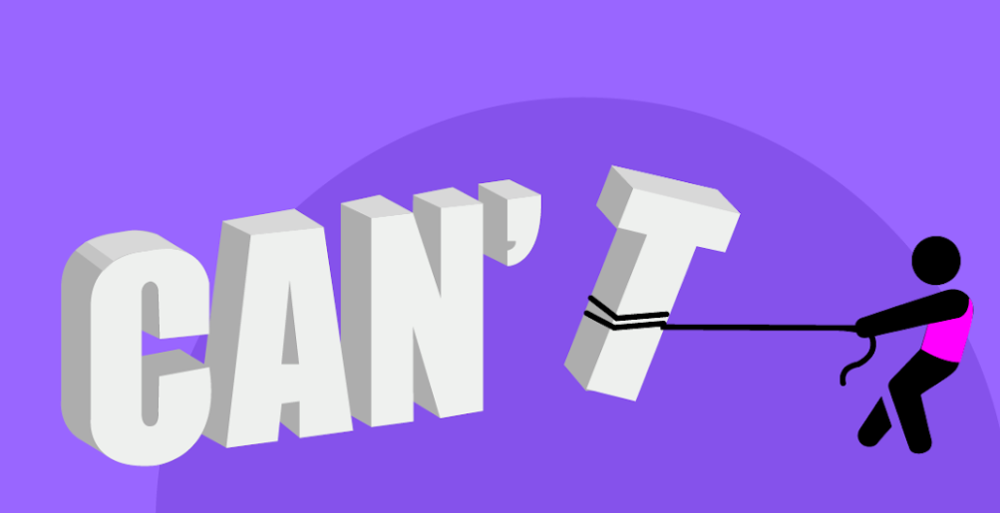

From Insight to Action: How AI Nudges Drive Daily Behavior Change
Every day, Worxogo’s Nudge Coach sends thousands of AI-powered nudges that help employees focus, act, and grow. But what exactly is a nudge—and how does it work?
Nudge: The Tiny Rudder Steering Your Day
Popularised by Nobel laureate Richard Thaler and Cass Sunstein, Nudge is a term from Behavioral Economics. A nudge is a gentle push, a suggestion almost. A subtle prompt that guides behavior in a desired direction.
Just a little signal. A little steer. Tiny cue. Timed right. Big shift.

Worxogo Nudge Engine — Powered by AI
Keeping every employee on-track, one smart nudge at a time. The engine delivers short, personalised nudges that guide employees toward their targets—without adding extra work for managers.
Why it’s AI, not just automation
Choice Architecture
Multi-factor algorithm ranks gap-to-target, business importance, trend velocity, and seasonality to surface the single highest-impact KPI to nudge.
Bayesian Style Selector
Dynamically updates the probability that Loss Aversion, Curiosity, Authority, etc. will spark action for this user in this context.
Hill-Climbing Optimiser
Reinforcement-learning loop that A/B tests micro-changes and keeps only those raising click-throughs or task completion.
NLG Message Generator
Large-language-model layer rewrites the chosen frame in the employee’s preferred tone—formal, coaching, or friendly—in milliseconds.
- 📈 Higher engagement with fewer messages
- 🎯 Measurable lifts in KPI achievement
- 🤖 Self-tuning system—no manual rule-setting
Crafted for Action: The 3 Building Blocks of Every Effective Nudge
Every AI nudge is designed to do one thing: drive action. Behind these effective nudges lies a mix of three powerful forces—drawn from game design, social psychology, and behavioral science. Together, they turn a simple prompt into a call you can’t ignore.
Game Mechanics
Points. Badges. Leaderboards. They tap into intrinsic motivators like mastery, achievement, and challenge, helping employees stay focused and invested in their progress.
Because who doesn’t want to win at work?
Social Mechanics
People are influenced by the actions of others. These nudges use social cues—peer performance, social proof, and community to create a sense of shared momentum.
Because no one is an island. Especially at work.
Persuasive Mechanics
Rooted in behavioral science, these nudges apply principles like Curiosity, Loss Aversion, and Peak End Rule. They shape the way decisions are presented, making the right action feel easier and more intuitive—without forcing it.
Smart guidance that feels just right for you. Because it is.
Together? They’re the secret sauce behind every hyper-personalized nudge that actually works. See the impact →
What You See in a Nudge—and What It’s Doing Behind the Scenes

Prioritization
“Today’s focus should be to get 3 Promoter scores...”
Cuts through the noise to guide attention to what matters most today.
Social Norming
“Half of your colleagues are at 60%”
Creates subtle social pressure by showing peer performance—nudging you to catch up or stay ahead.
Progress Visualization
“...and get closer to your team”
Shows how today’s effort connects to a bigger goal or team progress—giving the action meaning.
Call for Action
“CHECK DASHBOARD”
A clear, low-friction next step nudges the user toward taking action—right now.
Each of these elements taps into behavioral science to shape decision-making—without force, just a well-timed nudge.